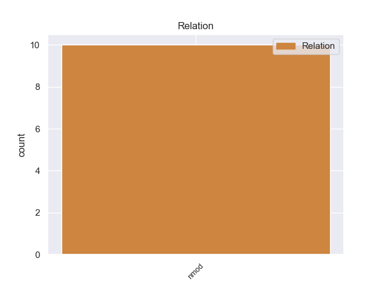
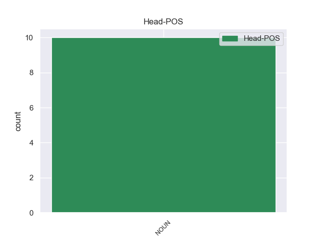
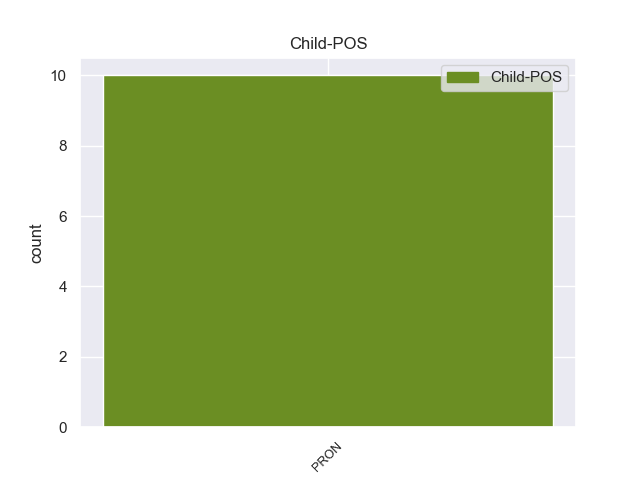

Distribution of features within this leaf



Agreement Rules sorted by frequency.
- When the dependent token is the nominal modifier(nmod) of the head token, and the dependent token is PRON.
1 Η _ _ _ _ 0 _ _ _
2 επιτυχία _ _ _ _ 0 _ _ _
3 του _ _ _ _ 0 _ _ _
4 ευρώ _ _ _ _ 0 _ _ _
5 οφείλεται _ _ _ _ 0 _ _ _
6 , _ _ _ _ 0 _ _ _
7 πριν _ _ _ _ 0 _ _ _
8 απ' _ _ _ _ 0 _ _ _
9 όλα _ _ _ _ 0 _ _ _
10 , _ _ _ _ 0 _ _ _
11 σ _ _ _ _ 0 _ _ _
12 τους _ _ _ _ 0 _ _ _
13 λαούς _ _ _ _ 0 _ _ _
14 μας _ _ _ _ 0 _ _ _
15 και _ _ _ _ 0 _ _ _
16 σ _ _ _ _ 0 _ _ _
17 τους _ _ _ _ 0 _ _ _
18 συμπολίτες συμπολίτης NOUN NOUN Case=Acc|Gender=Masc|Number=Plur 0 _ _ _
19 μας μου PRON PRON Case=Gen|Gender=Masc|Number=Plur|Person=1|Poss=Yes|PronType=Prs 18 nmod _ SpaceAfter=No
20 . _ _ _ _ 0 _ _ _
Disagree Examples:
1 Πράγματι _ _ _ _ 0 _ _ _
2 , _ _ _ _ 0 _ _ _
3 η _ _ _ _ 0 _ _ _
4 Σύμβαση _ _ _ _ 0 _ _ _
5 του _ _ _ _ 0 _ _ _
6 1991 _ _ _ _ 0 _ _ _
7 σχετικά _ _ _ _ 0 _ _ _
8 με _ _ _ _ 0 _ _ _
9 την _ _ _ _ 0 _ _ _
10 εκτέλεση _ _ _ _ 0 _ _ _
11 αλλοδαπών _ _ _ _ 0 _ _ _
12 αποφάσεων _ _ _ _ 0 _ _ _
13 σε _ _ _ _ 0 _ _ _
14 ποινικές _ _ _ _ 0 _ _ _
15 υποθέσεις _ _ _ _ 0 _ _ _
16 - _ _ _ _ 0 _ _ _
17 η _ _ _ _ 0 _ _ _
18 οποία _ _ _ _ 0 _ _ _
19 διαφορετικά _ _ _ _ 0 _ _ _
20 θα _ _ _ _ 0 _ _ _
21 ήταν _ _ _ _ 0 _ _ _
22 σχετική _ _ _ _ 0 _ _ _
23 με _ _ _ _ 0 _ _ _
24 το _ _ _ _ 0 _ _ _
25 θέμα θέμα NOUN NOUN Case=Acc|Gender=Neut|Number=Sing 0 _ _ _
26 μας μου PRON PRON Case=Gen|Gender=Masc|Number=Plur|Person=1|Poss=Yes|PronType=Prs 25 nmod _ _
27 - _ _ _ _ 0 _ _ _
28 δεν _ _ _ _ 0 _ _ _
29 έχει _ _ _ _ 0 _ _ _
30 τεθεί _ _ _ _ 0 _ _ _
31 ακόμα _ _ _ _ 0 _ _ _
32 σε _ _ _ _ 0 _ _ _
33 ισχύ _ _ _ _ 0 _ _ _
34 , _ _ _ _ 0 _ _ _
35 δέκα _ _ _ _ 0 _ _ _
36 χρόνια _ _ _ _ 0 _ _ _
37 ύστερα _ _ _ _ 0 _ _ _
38 από _ _ _ _ 0 _ _ _
39 την _ _ _ _ 0 _ _ _
40 υπογραφή _ _ _ _ 0 _ _ _
41 της _ _ _ _ 0 _ _ _
42 . _ _ _ _ 0 _ _ _
1 Η _ _ _ _ 0 _ _ _
2 Ομάδα ομάδα NOUN NOUN Case=Nom|Gender=Fem|Number=Sing 0 _ _ _
3 μου μου PRON PRON Case=Gen|Gender=Masc|Number=Sing|Person=1|Poss=Yes|PronType=Prs 2 nmod _ _
4 πιστεύει _ _ _ _ 0 _ _ _
5 πως _ _ _ _ 0 _ _ _
6 η _ _ _ _ 0 _ _ _
7 σφαιρική _ _ _ _ 0 _ _ _
8 προσέγγιση _ _ _ _ 0 _ _ _
9 είναι _ _ _ _ 0 _ _ _
10 απαραίτητη _ _ _ _ 0 _ _ _
11 , _ _ _ _ 0 _ _ _
12 και _ _ _ _ 0 _ _ _
13 για _ _ _ _ 0 _ _ _
14 τον _ _ _ _ 0 _ _ _
15 λόγο _ _ _ _ 0 _ _ _
16 αυτό _ _ _ _ 0 _ _ _
17 αναμένουμε _ _ _ _ 0 _ _ _
18 με _ _ _ _ 0 _ _ _
19 μεγάλη _ _ _ _ 0 _ _ _
20 ανυπομονησία _ _ _ _ 0 _ _ _
21 τη _ _ _ _ 0 _ _ _
22 Λευκή _ _ _ _ 0 _ _ _
23 Βίβλο _ _ _ _ 0 _ _ _
24 της _ _ _ _ 0 _ _ _
25 Επιτροπής _ _ _ _ 0 _ _ _
26 σχετικά _ _ _ _ 0 _ _ _
27 με _ _ _ _ 0 _ _ _
28 αυτό _ _ _ _ 0 _ _ _
29 το _ _ _ _ 0 _ _ _
30 ζήτημα _ _ _ _ 0 _ _ _
31 . _ _ _ _ 0 _ _ _
1 Εκπαιδεύονται _ _ _ _ 0 _ _ _
2 συνεχώς _ _ _ _ 0 _ _ _
3 και _ _ _ _ 0 _ _ _
4 με _ _ _ _ 0 _ _ _
5 τον _ _ _ _ 0 _ _ _
6 τρόπο _ _ _ _ 0 _ _ _
7 αυτό _ _ _ _ 0 _ _ _
8 αυξάνεται _ _ _ _ 0 _ _ _
9 σημαντικά _ _ _ _ 0 _ _ _
10 η _ _ _ _ 0 _ _ _
11 πείρα πείρα NOUN NOUN Case=Nom|Gender=Fem|Number=Sing 0 _ _ _
12 τους μου PRON PRON Case=Gen|Gender=Masc|Number=Plur|Person=3|Poss=Yes|PronType=Prs 11 nmod _ SpaceAfter=No
13 . _ _ _ _ 0 _ _ _
1 « _ _ _ _ 0 _ _ _
2 Σύμφωνα _ _ _ _ 0 _ _ _
3 με _ _ _ _ 0 _ _ _
4 τις _ _ _ _ 0 _ _ _
5 πηγές πηγή NOUN NOUN Case=Acc|Gender=Fem|Number=Plur 0 _ _ _
6 μας μου PRON PRON Case=Gen|Gender=Masc|Number=Plur|Person=1|Poss=Yes|PronType=Prs 5 nmod _ SpaceAfter=No
7 , _ _ _ _ 0 _ _ _
8 ο _ _ _ _ 0 _ _ _
9 ΟΗΕ _ _ _ _ 0 _ _ _
10 θα _ _ _ _ 0 _ _ _
11 θέσει _ _ _ _ 0 _ _ _
12 το _ _ _ _ 0 _ _ _
13 νέο _ _ _ _ 0 _ _ _
14 σχέδιο _ _ _ _ 0 _ _ _
15 για _ _ _ _ 0 _ _ _
16 ψήφισμα _ _ _ _ 0 _ _ _
17 την _ _ _ _ 0 _ _ _
18 Δευτέρα _ _ _ _ 0 _ _ _
19 » _ _ _ _ 0 _ _ _
20 , _ _ _ _ 0 _ _ _
21 κατέληξε _ _ _ _ 0 _ _ _
22 ο _ _ _ _ 0 _ _ _
23 Γκενάντι _ _ _ _ 0 _ _ _
24 Γκατίλοφ _ _ _ _ 0 _ _ _
25 . _ _ _ _ 0 _ _ _
1 Θα _ _ _ _ 0 _ _ _
2 πρέπει _ _ _ _ 0 _ _ _
3 να _ _ _ _ 0 _ _ _
4 προχωρήσουμε _ _ _ _ 0 _ _ _
5 σ _ _ _ _ 0 _ _ _
6 τη _ _ _ _ 0 _ _ _
7 μεταρρύθμιση _ _ _ _ 0 _ _ _
8 των _ _ _ _ 0 _ _ _
9 δομών _ _ _ _ 0 _ _ _
10 του _ _ _ _ 0 _ _ _
11 Κοινοβουλίου _ _ _ _ 0 _ _ _
12 από _ _ _ _ 0 _ _ _
13 το _ _ _ _ 0 _ _ _
14 βήμα _ _ _ _ 0 _ _ _
15 αυτού _ _ _ _ 0 _ _ _
16 του _ _ _ _ 0 _ _ _
17 Σώματος _ _ _ _ 0 _ _ _
18 , _ _ _ _ 0 _ _ _
19 όπως _ _ _ _ 0 _ _ _
20 πολύ _ _ _ _ 0 _ _ _
21 σωστά _ _ _ _ 0 _ _ _
22 είπατε _ _ _ _ 0 _ _ _
23 , _ _ _ _ 0 _ _ _
24 ερχόμενοι _ _ _ _ 0 _ _ _
25 σε _ _ _ _ 0 _ _ _
26 επαφή _ _ _ _ 0 _ _ _
27 με _ _ _ _ 0 _ _ _
28 τους _ _ _ _ 0 _ _ _
29 πολίτες _ _ _ _ 0 _ _ _
30 μέσω _ _ _ _ 0 _ _ _
31 της _ _ _ _ 0 _ _ _
32 συζήτησης _ _ _ _ 0 _ _ _
33 των _ _ _ _ 0 _ _ _
34 σημαντικών _ _ _ _ 0 _ _ _
35 θεμάτων _ _ _ _ 0 _ _ _
36 που _ _ _ _ 0 _ _ _
37 τους _ _ _ _ 0 _ _ _
38 απασχολούν _ _ _ _ 0 _ _ _
39 σ _ _ _ _ 0 _ _ _
40 την _ _ _ _ 0 _ _ _
41 καθημερινή _ _ _ _ 0 _ _ _
42 τους μου PRON PRON Case=Gen|Gender=Masc|Number=Plur|Person=3|Poss=Yes|PronType=Prs 43 nmod _ _
43 ζωή ζωή NOUN NOUN Case=Acc|Gender=Fem|Number=Sing 0 _ _ _
44 - _ _ _ _ 0 _ _ _
45 για _ _ _ _ 0 _ _ _
46 να _ _ _ _ 0 _ _ _
47 συζητήσουμε _ _ _ _ 0 _ _ _
48 πραγματικά _ _ _ _ 0 _ _ _
49 για _ _ _ _ 0 _ _ _
50 τα _ _ _ _ 0 _ _ _
51 θέματα _ _ _ _ 0 _ _ _
52 που _ _ _ _ 0 _ _ _
53 ενδιαφέρουν _ _ _ _ 0 _ _ _
54 εκεί _ _ _ _ 0 _ _ _
55 έξω _ _ _ _ 0 _ _ _
56 , _ _ _ _ 0 _ _ _
57 όχι _ _ _ _ 0 _ _ _
58 για _ _ _ _ 0 _ _ _
59 όσα _ _ _ _ 0 _ _ _
60 μας _ _ _ _ 0 _ _ _
61 αφορούν _ _ _ _ 0 _ _ _
62 εδώ _ _ _ _ 0 _ _ _
63 μέσα _ _ _ _ 0 _ _ _
64 . _ _ _ _ 0 _ _ _